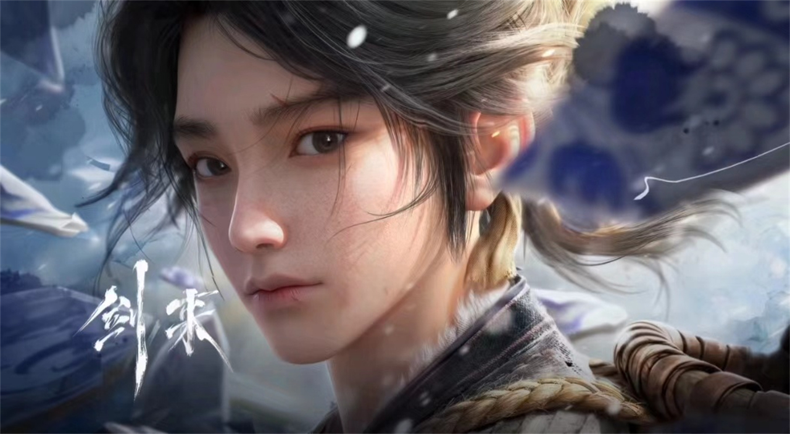
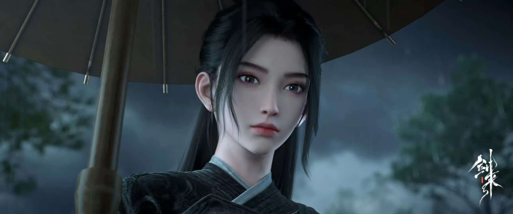
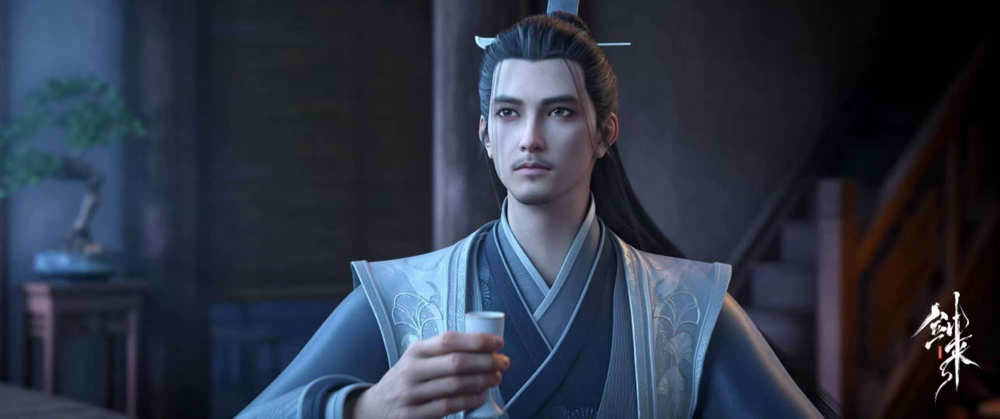
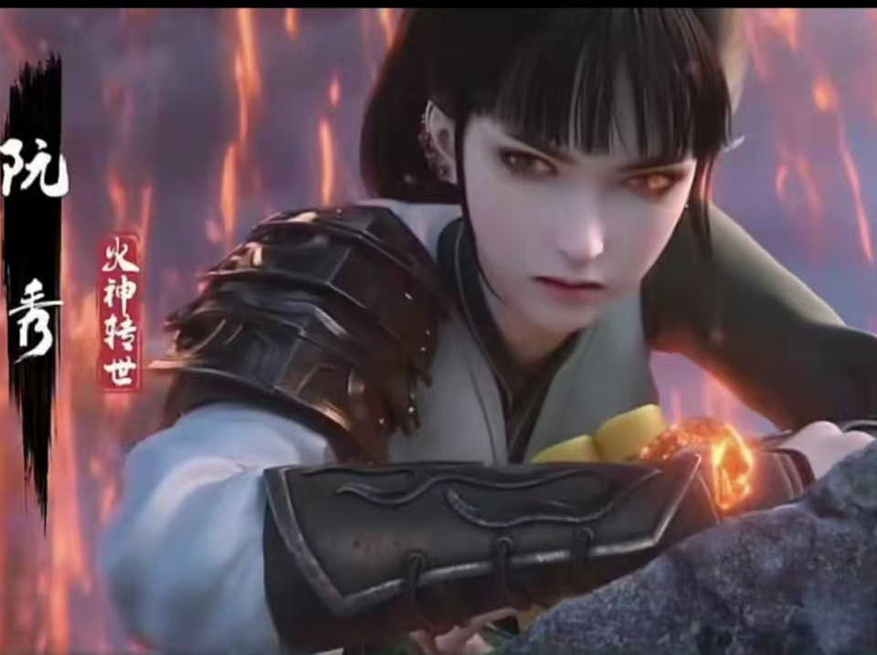
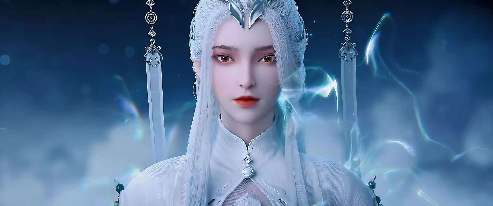

陈平安
陈平安，骊珠洞天小镇出身的穷苦少年，早年父母早亡，饱受他人冷眼，却养成了坚韧不拔的性格，后被齐静春代师收徒成为文圣一脉关门弟子
陈全陈淑之子、落魄山宗主、青萍剑宗祖师、剑气长城末代隐官、蛮荒天骄矫正大师、取名大师、文胆破碎大师、女装大佬、纹身大佬、五彩天下第一人宁姚道侣、文圣一脉关门弟子、浩然天下太子爷、持剑者之主、0.51天庭共主

-

-

宁姚
宁姚，十四境纯粹剑修，五彩天下第一人
在小说中，天下剑修分两种，一种是宁姚，另一种是其他剑修。剑道其天赋极高，一心追求剑道巅峰，已剑问道是她的毕生心愿 -

齐静春
齐静春，十四境巅峰练气士，文圣一脉四弟子
在小说中，他是陈平安修行路上的领路人，学问高深，思想境界极高，拥有三个本命字，前无古人，后无来者。被誉为最有望立教称租的读书人，虽然对这个世界很失望，却仍然坚守自己的信念，以自身性命换来小镇3000人的性命和转生 -

阮秀
阮秀，远古天庭五至高--火神转世，十五境
兵家圣人阮邛女儿，同时是天庭红神转世，在某次机缘巧合之下遇见陈平安，并被陈平安的赤子之心深深吸引，后蛮荒天下入侵浩然，阮秀登天而去 -

持剑者
持剑者，远古天庭五至高之一，十五境
持剑者，小说中杀力最强之人，曾带领远古神灵征战四方，将不计其数的神灵和妖族斩杀，其尸骸在其脚下堆积成山。后助人族登天成功，在骊珠洞天的桥廊下的等待新一任主人出现，最终认主陈平安，成为陈平安最大助力